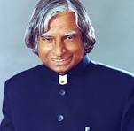

Missile Main Of India
Tamil Muslims are Tamils who practise Islam. The community is 6 million in India, primarily in the state of Tamil Nadu where 90% of the Muslim community identified themselves as Tamils.[1][2] In Tamil Nadu, the majority of Tamil-speaking Muslims belong to the Rowthers Community while other Muslims live in coastal Tamil Nadu. There is a substantial diaspora, particularly in Southeast Asia, which has seen their presence as early as the 13th century. In the late 20th century, the diaspora expanded to Western Europe, Persian Gulf and North America.[3] These Tamil speaking Muslim communities in Sri Lanka were known as the Sonakar, which is derived from the term Yona, originally meaning a Moors.[4] Tamil Muslims are Tamils who practise Islam. The community is 6 million in India, primarily in the state of Tamil Nadu where 90% of the Muslim community identified themselves as Tamils.[1][2] In Tamil Nadu, the majority of Tamil-speaking Muslims belong to the Rowthers Community while other Muslims live in coastal Tamil Nadu. There is a substantial diaspora, particularly in Southeast Asia, which has seen their presence as early as the 13th century. In the late 20th century, the diaspora expanded to Western Europe, Persian Gulf and North America.[3] These Tamil speaking Muslim communities in Sri Lanka were known as the Sonakar, which is derived from the term Yona, originally meaning a Moors.[4]
Biographic
- Tamil Muslims are Tamils who practise Islam. The community is 6 million in India, primarily in the state of Tamil Nadu where 90% of the Muslim community identified themselves as Tamils.
- [1][2] In Tamil Nadu, the majority of Tamil-speaking Muslims belong to the Rowthers Community while other Muslims live in coastal Tamil Nadu.
- There is a substantial diaspora, particularly in Southeast Asia, which has seen their presence as early as the 13th century.
- In the late 20th century, the diaspora expanded to Western Europe, Persian Gulf and North America.
- [3] These Tamil speaking Muslim communities in Sri Lanka were known as the Sonakar, which is derived from the term Yona, originally meaning a Moors.[4]